Screen Shots
this is the console where I can type commands:
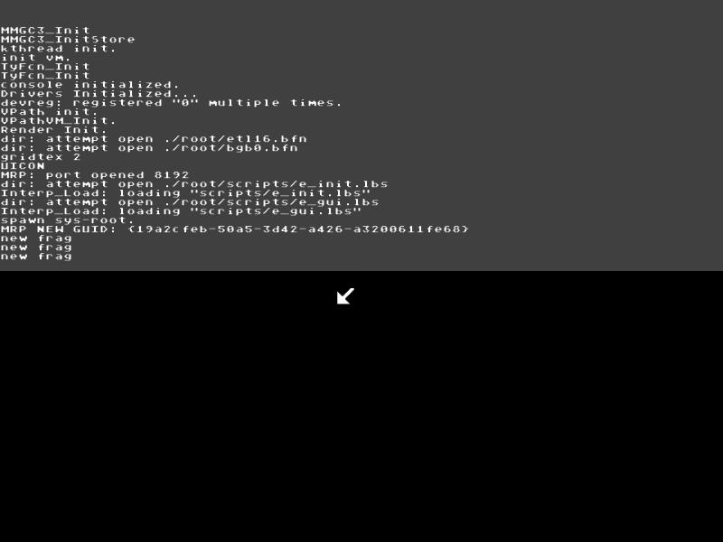
console after I told it to show a few objects:
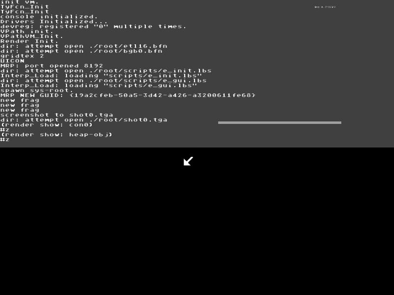
looking at the objects just shown:
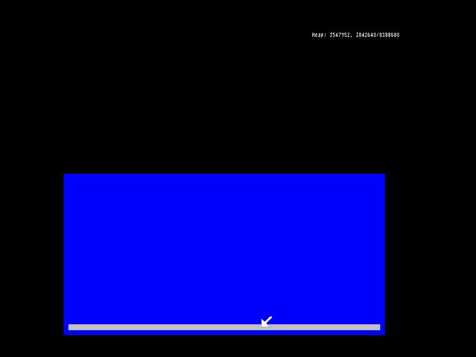
this object (con0) is actually a repl:
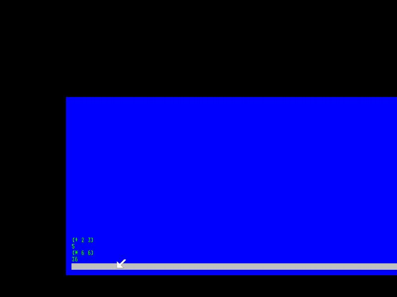
this is 3D mode after loading a script defining "the world" (pun), it shows
the sphere falling twards the cube:
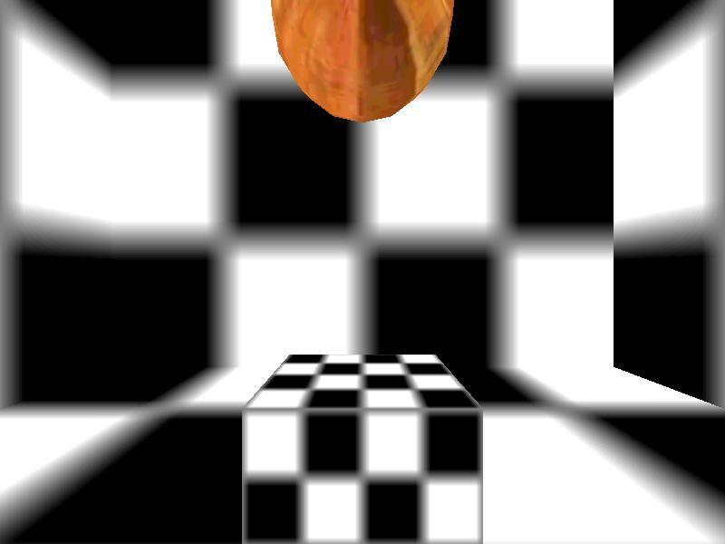
this is after it had landed, and from a position near the floor:
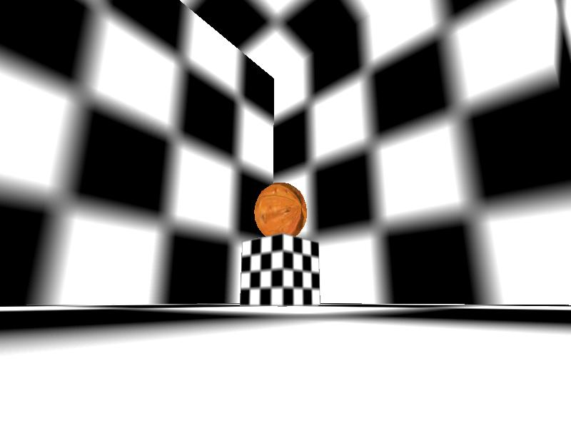
I had pushed it around:
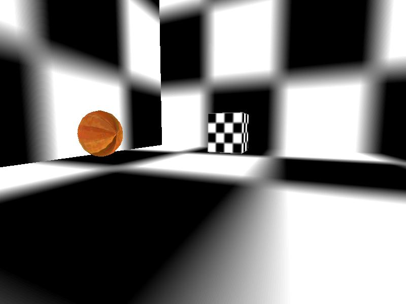
and this is the sphere flying through the air after being hit with the camera:
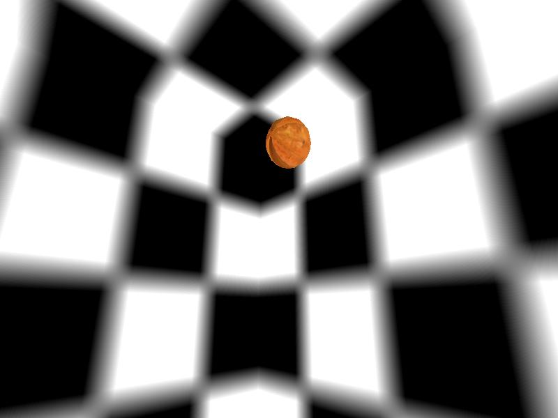
a newer world:
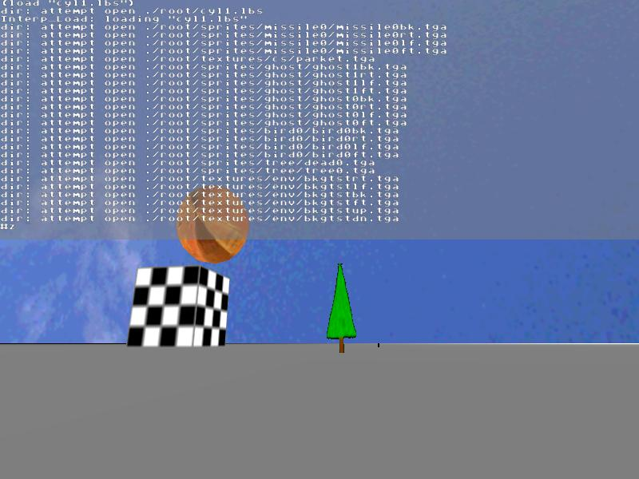
from the air, things are sitting on a 20x20km square, I also have a skycube:
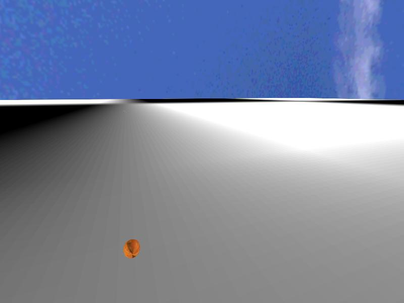
looking down at the bird, a tree, and the sphere:
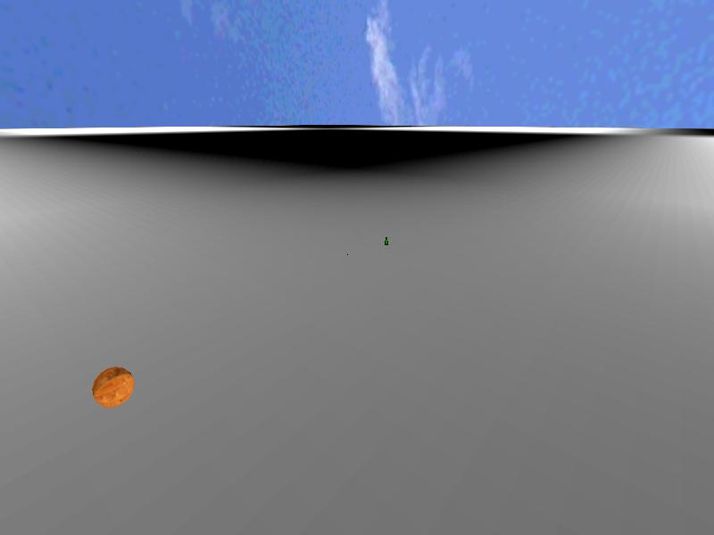
looking at the bird, which fairly quickly goes in a big circle:
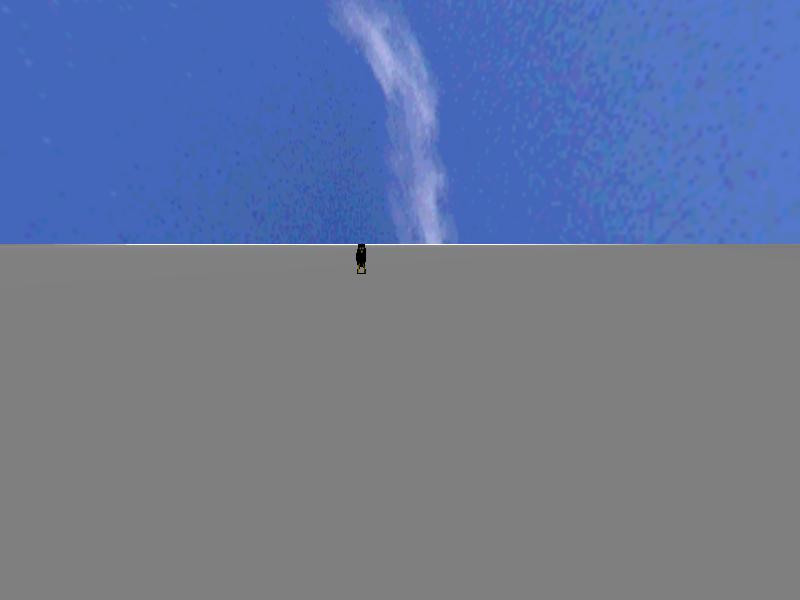
looking at the tree (failing to get a missle in the shot, it is the dark
spot):
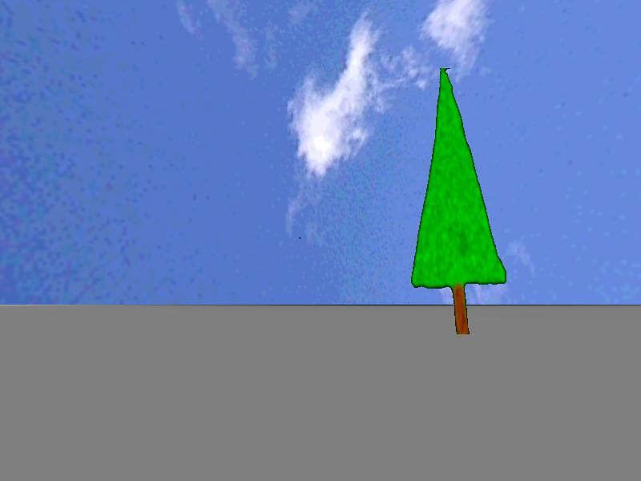
this is the tree after I shot it with missiles a few times:
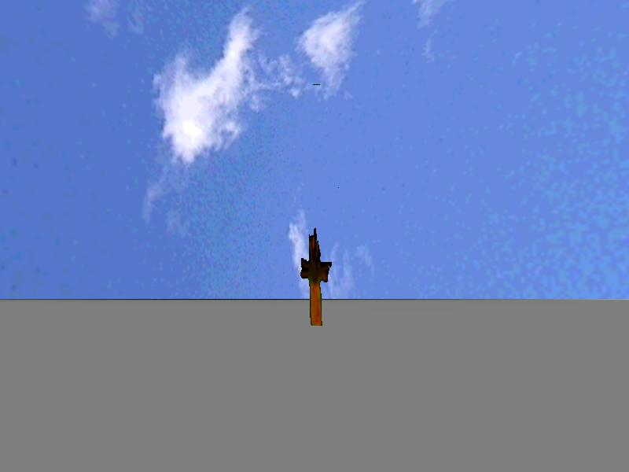